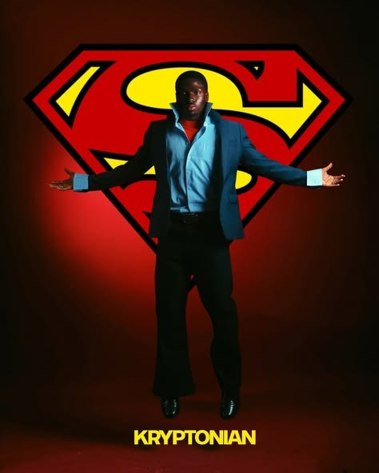
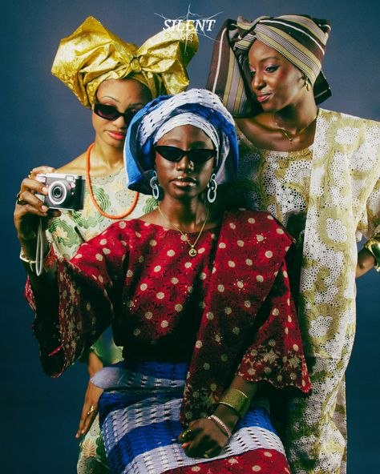
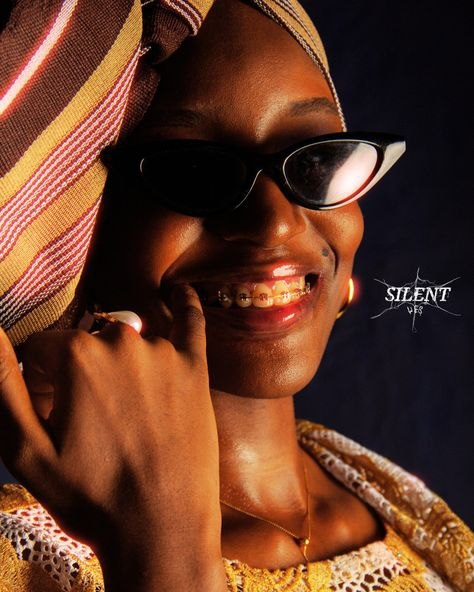
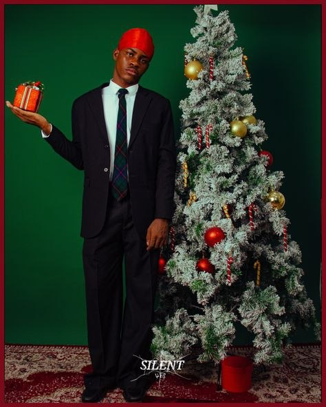
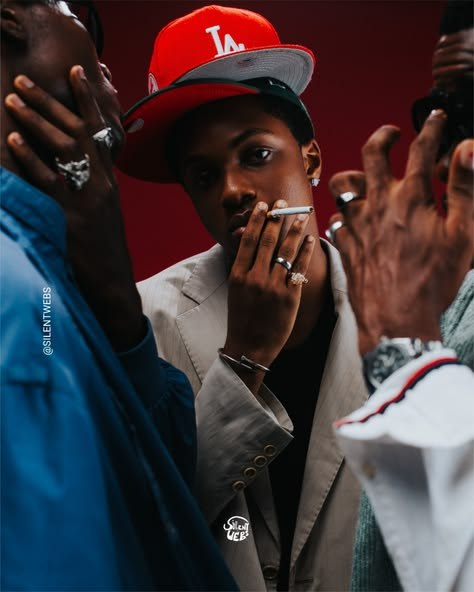
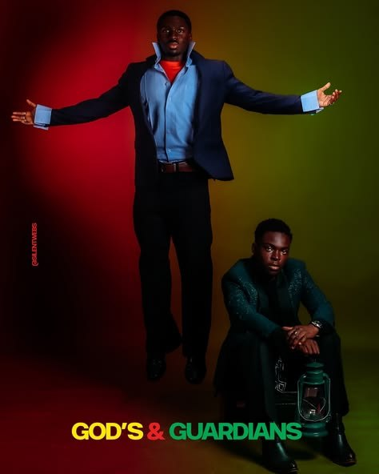
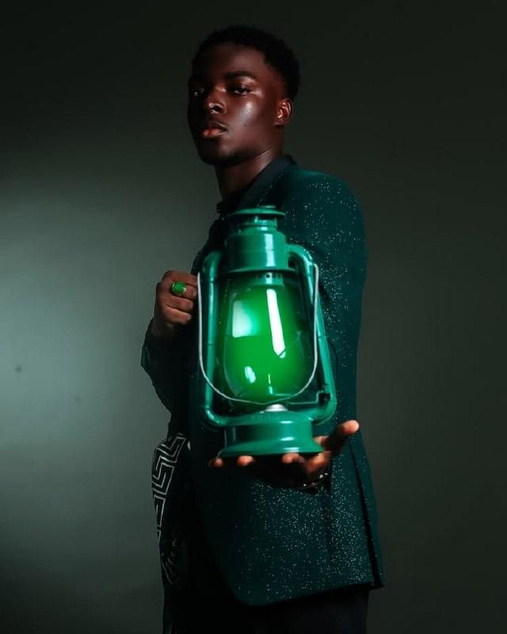

ÁXÍS Spotlight
Agoreyo Kesiena
Silent Webs: The Space Between the Moments
Kesiena is a photographer and creative director who approaches his work with patience, trust, and a strong sense of observation. Through Silent Webs, his independent photography practice, he creates intimate images rooted in genuine human moments rather than heavily directed poses.

Kesiena treats the clock as the client’s problem, not something to perform for. On set, he front-loads trust early. A couple of “safe” frames to let everyone relax, so that by the time the day runs an hour behind, no one’s panicking about it. He’s learned to slow down at the exact moment the pressure builds to speed up, because that’s usually right when something real is about to happen, and rushing kills it.

That patience shows up as restraint rather than control. He isn’t the kind of photographer instructing a chin tilt or a three-second hold. His direction happens earlier, in conversation, figuring out what’s actually going on with someone that day. Once the camera’s up, his job is closer to noticing than commanding: give a subject something to think about, then get out of the way.

The same instinct for separation runs through how he’s structured his work. Silent Webs is his alone, his eye, his calls, his mistakes to own. VOYD, which he’s building with co-founders David and Jesse, is a different discipline entirely: designing pieces people wear rather than images people look at. He keeps the two separate deliberately. Blur them together, and VOYD risks reading as a Silent Webs side project instead of its own universe. Keeping them apart gives both room to become themselves.

Kesiena’s visual instincts, unexpectedly, come from film. Cole Bennett and James Gunn, for very different reasons. From Bennett, he takes proximity: the ability to get close to people without it feeling staged, a documentary rawness even inside a big production. From Gunn, it’s how a group holds together in a frame, warmth or humour always sitting beside chaos, nothing purely decorative.

Neither shoots stills, which he says is the point. He’s not borrowing their technique, but their instinct for when a moment is actually alive versus merely posed to look that way.

That instinct runs through the images in Silent Webs, from Tempest (2026) to Woman in Black (2026) and CHROMO (2026). Each work carries the same interest in people, presence, movement, and the space between what is happening and what is being performed for the camera.
